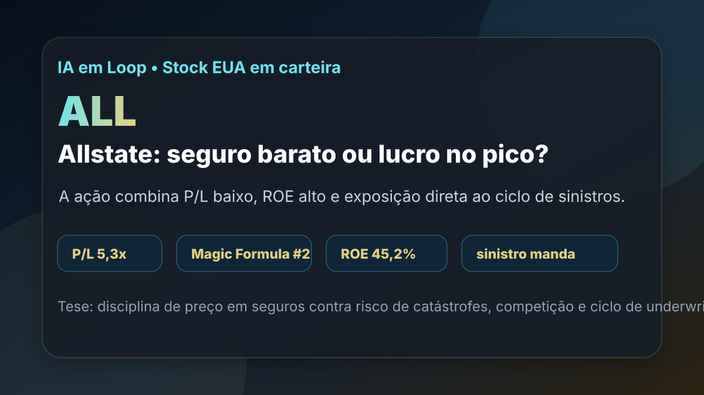

28/08: ALL, Allstate e o preço do seguro cíclico
Allstate entrou na carteira dolarizada de Magic Formula e aparece bem nos rankings do IA em Loop. A pergunta central é simples: a seguradora está barata porque o mercado subestima a melhora de lucro, ou o P/L baixo reflete um lucro em fase favorável demais?

Em seguradoras, múltiplo baixo só é oportunidade quando o prêmio cobre bem o risco e o lucro não depende de um ciclo excepcional.
Resposta curta: preço barato, mas tese dependente de disciplina técnica
Na base dolarizada do IA em Loop com data-base de 06/08/2026, ALL aparece em 2º lugar na Magic Formula EUA e em 8º lugar no ranking BESST e Buffett EUA. A base mostra preço de US$ 264,59, P/L de 5,30, P/L projetado de 9,98, P/VP de 2,31, EV/EBITDA de 4,86, ROE de 45,22% e earnings yield de 18,87%.
A compra real de agosto reforça a necessidade de acompanhamento: em 18/08/2026, a carteira Magic Formula Dolarizada adicionou 0,12012363 ação de ALL a US$ 263,2288, com valor executado de US$ 31,62. Isso não transforma a ação em recomendação; transforma a tese em posição que precisa ser monitorada com ainda mais disciplina.
O que os documentos verificados mostram
A consulta à SEC mostra a Allstate Corporation, CIK 0000899051, classificada em seguros patrimoniais e de responsabilidade. O 10-Q arquivado em 05/08/2026, referente ao trimestre encerrado em 30/06/2026, informa US$ 18,596 bilhões de receitas totais no 2T26, contra US$ 16,633 bilhões no 2T25.
No mesmo trimestre, o lucro líquido foi de US$ 3,271 bilhões, acima dos US$ 2,099 bilhões do 2T25. No semestre, as receitas totais foram de US$ 35,537 bilhões e o lucro líquido somou US$ 5,729 bilhões. O balanço de 30/06/2026 mostrava US$ 124,756 bilhões em ativos, US$ 91,078 bilhões em passivos, US$ 33,698 bilhões em patrimônio líquido e US$ 7,492 bilhões em dívida.
O detalhe importante é a composição do negócio. As receitas de prêmios de seguros patrimoniais e de responsabilidade somaram US$ 15,670 bilhões no 2T26 e US$ 31,223 bilhões no semestre. Também houve US$ 1,009 bilhão de receita líquida de investimentos no trimestre. Para uma seguradora, isso significa que underwriting (subscrição e precificação do risco) e carteira de investimentos andam juntos.
| Métrica verificada | Período/fonte | Valor | Leitura |
|---|---|---|---|
| Receitas totais | SEC 2T26 | US$ 18,596 bi | crescimento sobre o 2T25 |
| Lucro líquido | SEC 2T26 | US$ 3,271 bi | lucro forte, mas cíclico em seguros |
| Prêmios patrimoniais | SEC 1S26 | US$ 31,223 bi | base principal da operação seguradora |
| Patrimônio líquido | SEC 30/06/2026 | US$ 33,698 bi | base de capital que sustenta risco segurado |
| Dívida | SEC 30/06/2026 | US$ 7,492 bi | alavancagem administrável, mas não irrelevante |
Por que Allstate importa para o investidor
Allstate é uma seguradora grande em um mercado essencial: proteção de automóveis, residências e outros riscos patrimoniais. A vantagem potencial vem da escala, da marca, da base de clientes e da capacidade de reajustar preços quando a sinistralidade sobe. A armadilha é que esse mesmo negócio sofre com inflação de reparos, eventos climáticos, competição e ciclos de preço.
Por isso, o P/L de 5,3 não deve ser lido sozinho. Em seguros, o lucro pode saltar quando prêmios sobem, perdas normalizam e investimentos rendem mais; mas também pode cair rápido quando catástrofes, inflação de indenizações ou erro de precificação aparecem. O ranking encontra preço baixo e retorno alto; a análise precisa testar se esses números são sustentáveis.
ALL é uma posição pequena, barata pelo lucro atual e com mérito quantitativo claro. O ponto de atenção é não confundir melhora operacional com lucro permanentemente elevado. A tese melhora se a companhia mantiver preço disciplinado, sinistralidade controlada e capital bem protegido; piora se o ciclo de seguros virar contra a margem.
O que favorece e o que ameaça a tese
Favoráveis
• Presença simultânea em dois rankings dolarizados.
• P/L baixo e earnings yield alto na base local.
• Receita e lucro líquido fortes no 2T26.
• Base relevante de prêmios em seguros patrimoniais.
• Patrimônio líquido robusto frente ao tamanho da posição comprada.
Desfavoráveis
• Seguros são sensíveis a catástrofes e inflação de sinistros.
• Lucro recente pode estar acima do nível normalizado.
• P/VP de 2,31 exige retorno sobre patrimônio persistente.
• Competição pode limitar reajustes de preço.
• Setor financeiro carrega risco regulatório, contábil e de carteira de investimentos.
Checklist para acompanhar daqui em diante
| Ponto | O que monitorar | Se piorar |
|---|---|---|
| Sinistralidade | claims, catástrofes e índice combinado | o lucro pode normalizar para baixo |
| Prêmios | crescimento de prêmios e capacidade de reajuste | margem perde defesa contra inflação de reparos |
| Investimentos | renda financeira, perdas e ganhos realizados | resultado contábil fica mais volátil |
| Capital | patrimônio líquido, recompra e dividendos | retorno ao acionista pode enfraquecer a segurança |
| Valuation | P/L normalizado e P/VP | o desconto pode ser só reflexo de pico de lucro |
Conclusão
A resposta para a pergunta do post é: Allstate parece barata pelo lucro atual, mas a qualidade da tese depende de provar que a melhora de underwriting é durável. O ranking justifica a entrada no radar e a posição pequena em carteira; o 10-Q mostra lucro e patrimônio fortes; o risco principal é pagar barato por um lucro que depois volta para baixo.
Na régua do IA em Loop, ALL deve ser acompanhada como seguro cíclico, não como crescimento previsível. A tese fica mais interessante se prêmios, sinistralidade e capital seguirem equilibrados. Fica mais fraca se catástrofes, competição ou inflação de indenizações comprimirem o resultado.